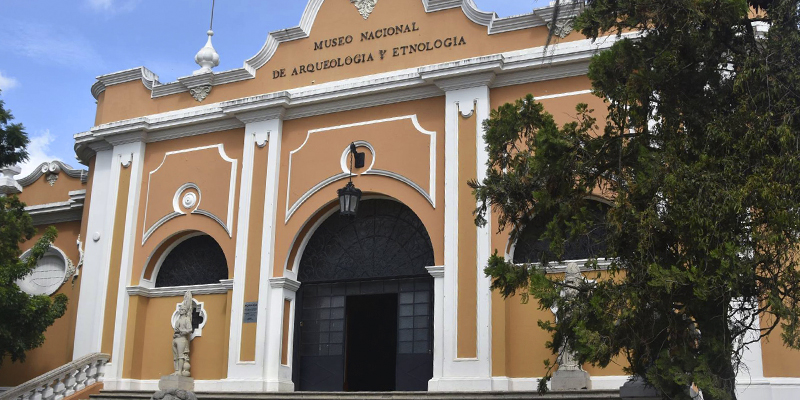
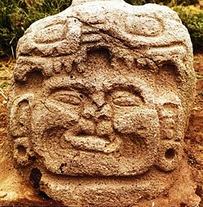
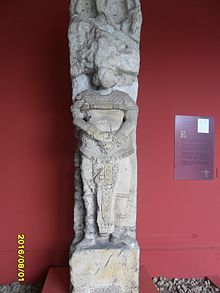

Museo Nacional de Arqueología y Etnología en Guatemala

El Museo Nacional de Arqueología y Etnología de Guatemala cuenta con una colección arqueológica extensa de más de 25,000 piezas de origen maya.
El Museo Nacional de Arqueología y Etnología -también conocido como MUNAE– es un museo situado en la Finca La Aurora, en la zona 13 de la ciudad de Guatemala. Cuenta con una muestra de varios temas relacionados con la historia de la cultura Maya en Guatemala, comenzando con los primeros grupos de cazadores recolectores que ocuparon el país, hasta la época contemporánea que exhibe la continuidad de las culturas mayas, así como la comprensión del fenómeno multicultural, generando una identidad nacional a través de su colección arqueológica y etnológica (Museo Nacional de Arqueología y Etnología de Guatemala.
La Historia
relata que el primer museo de Guatemala se inauguró el 7 de enero de 1866 y fue conocido como el Museo de la Sociedad Económica de Amigos del País, ubicado en el lugar que hoy ocupa el Congreso de la República de Guatemala (Museo Nacional de Arqueología y Etnología de Guatemala, s.f.).
El 30 de junio de 1898 se ordenó la creación del primer Museo Nacional para solemnizar el XXVII aniversario de la Revolución Liberal de 1871. Las instalaciones de este museo se situaban en el Palacio de La Reforma, al final de la actual Avenida de La Reforma y fue destruido por los terremotos de 1917 y 1918. El museo volvió a funcionar de 1921 a 1926 en la antigua Iglesia de El Calvario y luego, en 1931, se trasladó al Salón del Té, un edificio localizado en el centro del Zoológico La Aurora (Museo Nacional de Arqueología y Etnología de Guatemala, s.f.).
A causa de la remodelación de este salón, el museo se reubica en 1946, en la sede que ocupa actualmente, el Salón 5 de la Finca La Aurora, en los terrenos donde se realizaba la Feria de Noviembre para el presidente Jorge Ubico. Las nuevas instalaciones fueron arregladas entre 1946 y 1947, tras lo cual se abrió al público en septiembre de 1948. En los años setenta se decide hacer un nuevo guion y cambiar la exhibición permanente al guion que se observa en la actualidad (Museo Nacional de Arqueología y Etnología de Guatemala, s.f.).
monumento de la cultura maya-Museo Nacional de Arqueología y Etnología
KaminalJuyu
Kaminaljuyú es un sitio maya, poblado desde 1200 a.C. al 900 d. C. El lugar arqueológico se encuentra en el valle de lo que hoy es la ciudad de Guatemala. En este lugar se han hecho hallazgos de cerámica, escultura, arquitectura e ingeniería maya. La ciudad recibió una fuerte influencia de Teotihuacan. Tiene alrededor de ciento diez plataformas. Solamente se conserva su acrópolis central.
Espejo-Cilindros en piedra-Escultura-Monumento-Marcador Juego de pelota
Vasijas
Figuras y cabezas
Efigies de Hongo de piedra volcánica
Incensarios antropomorfos

KaminalJuyu-Maya-Museo Nacional de Arqueología y Etnología
Tierras Altas o Altiplano
En la sala Tierras Altas, se exhibe cerámica como vasijas, zapatos, figurillas (sobre todo femeninas que se asocian a la fertilidad); incensarios en diversas formas, entre ellos destacan los de tres picos, vasijas tipo Usulatán. Se puede observar esculturas zoomorfas (de forma animal) y antropomorfas (de forma humana).
Tierras Altas o Altiplano corresponde a los departamentos de: Guatemala, Sacatepéquez, Alta Verapaz, Quiché, Huehuetenango, Sololá, Totonicapán, y la parte norte de San Marcos y Quetzaltenango.
Incensarios Zoopomorfos
Incensarios
Vasijas, cuencos, platos, cantaros
Se exhibe cerámica-Museo Nacional de Arqueología y Etnología
Piedras Negras
Piedras Negras es un sitio arqueológico prehispánico de la civilización maya situado en la cuenca del Usumacinta, dentro del parque nacional Sierra del Lacandón, que contiene importantes vestigios de una de las ciudades más importantes del clásico maya; aunque la cerámica encontrada aquí demuestra que fue ocupada del 700 a.C. al 820 d.C., fue entre los años 450 d.C. y 810 d.C. que la ciudad alcanzó su tamaño actual, así como su mayor apogeo.[1]
Fue aquí donde la arquitecta Tatiana Proskouriakoff descifró por primera vez las inscripciones en las estelas que describen eventos de la política del periodo Clásico maya.[2] Fue la mayor ciudad prehispánica de la cuenca del Usumacinta, y es considerada uno de los monumentos culturales más importantes de Guatemala, a pesar de su aislamiento.

es un sitio arqueológico prehispánico de la civilización maya -Museo Nacional de Arqueología y Etnología